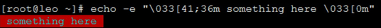
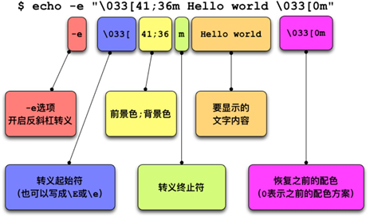

首页 > 编程笔记
echo命令_Linux echo命令：显示文字并给文字添加颜色
相信绝大多数程序员人生中的第一个程序都是“Hello，world”，而在 Linux Shell 中，这个程序是由 echo 命令来完成的。当你需要在屏幕上显示一些提示信息时，你就需要 echo 的帮忙，它就像一个麦克风，说你想说，唱你想唱。
在 echo 中，要使用转义字符，需要使用
下面来看看实际的用法吧：
从上面的例子可以得出结论：
其实世间还有很多转义字符，我们来一起开开眼界，如表 1 所示。
如果希望改变这种默认的换行行为，有两种方法：
在开发 Shell 程序时，我们经常需要用户在一些提示语句后面的同一行输入一些内容，这时，我们就需要用到“让 echo 不换行”的技能了。
面的例子中，我们显示“Enter your username：”的同时不进行换行，等待用户在提示语后面输入他们的用户名，这种体验要比换行后输入用户名更友好：
这三个 echo 命令的写法不同，但却有着相同的输出，所以很多人就误以为单引号、双引号、不加引号的效果是相同的。希望看完这一段落，大家会对这些引号拥有新的认识。
我们由表 2 可以看出，单引号将所有字符都看成普通字符，双引号会解释
如果我们想用 echo 打印出双引号，该怎么做呢：
方法一：echo"\"Hello World\""，最外层是双引号，它不敢无视“砍刀”，所以
方法二：echo‘"Hello World"’，最外层是单引号，无视所有特殊字符包括双引号，所以双引号被认为是普通字符。
既然有打印双引号的需求，也就有可能打印单引号，方法是类似的，使用双引号套单引号就可以实现了：
这时有些 GEEK 会发出疑问了，如果单引号中间套单引号，或者双引号中间套双引号，会是什么结果呢？
原来，在 Shell 中，一个双引号会去寻找它右边最靠近它的那个双引号进行配对，形成“一对双引号”。所以我们上面的命令事与愿违了，echo 会认为我们要打印三块内容：
看到了吧，echo 命令输出了红底青字，大家也看到了 echo 的另一面。原理其实并不难，echo 是通过使用“转义序列”来为世界涂上颜色的。语法格式如下：
格式详解：
好了，了解完原理，我们再来详细看一下上面的示例，如图 2 所示。
图 2 中所有涉及的颜色如表 3 所示。
我们通过两个示例来为大家展示什么是颜色变量，什么又是颜色动作。
第一种方法：定义颜色变量
第二种方法：定义颜色动作
第二种方法和第一种方法的思路类似，唯一不同的是我们把 echo 也加入到了定义中。这样有一个好处就是，使用时不用频繁输入 echo 了。不过，需要注意其中的一些细节：
好了，有了这些知识，相信你一定能让你的 Shell 程序绚烂多彩的，给用户带来一次视觉上的饕餮大餐。
有的，要相信世界是美好的。我们可以通过 terminfo 来实现。那么，terminfo 是什么呢？
UNIX 诞生之初，计算机专家们就是利用终端来登录到 UNIX 主机的，而不同类型的终端使用着不同的命令集，这会导致终端与 UNIX 之间无法配合工作。
为了解决这个问题，计算机专家们将几乎所有类型的终端的命令集都存储到了一个数据库中，以便实现统一化、标准化的处理和响应。而这个数据库就被称为 terminfo。
要想逃避火星文，我们需要 terminfo 的帮忙，而 tput 便是帮我们与 terminfo 建立联系的那个人。
其中，为文本涂色的方法是：
其中颜色的定义如表 4 所示。
好了，万事俱备，只欠东风，我们来通过 tput 编写涂色脚本吧：
这样看着清爽直观多了，解答一个可能的疑惑：sgr0 表示颜色重置。
好了，恭喜大家学习完了 echo，相信对 echo 的内容输出和涂色功能，都有了更深的理解和掌握，相信大家以后一定可以开发出交互性更好、更漂亮的 Shell 程序的。
用 echo 显示字符串
其实非常的简单，就是在 echo 后面加上想要显示的内容就好了：[roc@roclinux ~]$ echo 'Hello World' Hello World [roc@roclinux ~]$ echo "Hello World" Hello World [roc@roclinux ~]$ echo Hello World Hello World至于单引号、双引号、不加引号的区别，还请看下面的内容。
用 echo 显示变量的值
在 echo 的后面，不仅可以加字符串，还可以加变量名：#我们定义了一个变量, 叫作str [roc@roclinux ~]$ str="Hello World" #在echo后面加上str变量, 照样可以显示出来 [roc@roclinux ~]$ echo "$str, good morning" Hello World, good morning
神奇的反斜杠转义
转义字符，是 Shell 中的一些具有特殊功能的字符，比如 \n 表示换行、\t 表示制表符等。转义字符统一由反斜线“\”开头，后跟一个或几个字符，这样就赋予了字符“神奇的能力”。在 echo 中，要使用转义字符，需要使用
-e选项，并使用双引号将转义字符括起来。下面来看看实际的用法吧：
#一个很普通的Hello World [roc@roclinux ~]$ echo "Hello World" Hello World #尾部带有\n的Hello World, \n并没有被赋予"神奇的能力" [roc@roclinux ~]$ echo "Hello World\n" Hello World\n #使用了-e选项后, \n被赋予了"神奇的能力", 它实现了换行效果 [roc@roclinux ~]$ echo -e "Hello World\n" Hello World
从上面的例子可以得出结论：
-
不带
-e选项的 echo，将 \n 认为是普通字符； -
使用了
-e选项的 echo，会将 \n 认为是换行符。
其实世间还有很多转义字符，我们来一起开开眼界，如表 1 所示。
| 打印参数 | 解 释 |
|---|---|
| \a | 响铃 |
| \b | 退格(backspace) |
| \e | 转义符 |
| \c | 不换行 |
| \f | 换页 |
| \n | 换行 |
| \r | 回车 |
| \t | 水平制表符 |
| \v | 垂直制表符 |
| \ONNN | 字节数以八进制数 NNN (1 至 3 位）表不 |
| \xHH | 字节数以十六进制数 HH (1 至 2 位）表不 |
关闭 echo 的自动换行行为
默认情况下，echo 会在内容输出之后换行。如果平时没有注意过的话，这里再为大家演示一遍：[roc@roclinux ~]$ echo "Hello World" Hello World [roc@roclinux ~]$
如果希望改变这种默认的换行行为，有两种方法：
-
用
-n选项去掉 echo 末尾的换行符； -
用
-e选项打印出转义字符。
在开发 Shell 程序时，我们经常需要用户在一些提示语句后面的同一行输入一些内容，这时，我们就需要用到“让 echo 不换行”的技能了。
面的例子中，我们显示“Enter your username：”的同时不进行换行，等待用户在提示语后面输入他们的用户名，这种体验要比换行后输入用户名更友好：
#使用-n后, echo后面的换行效果消失了, 这也就导致了Shell提示符显示在了提示语同一行的后面 [roc@roclinux ~]$ echo -n "Enter your username:" Enter your username:[roc@roclinux ~]$ #用-e选项加\c转义符, 也可以实现不换行效果 [roc@roclinux ~]$ echo -e "Enter your username:\c" Enter your username:[roc@roclinux ~]$
echo 后面的引号
在文章开始阶段，我们为大家展示了三种 Hello World，大家还记得下面这三个命令吧：[roc@roclinux ~]$ echo 'Hello World' Hello World [roc@roclinux ~]$ echo "Hello World" Hello World [roc@roclinux ~]$ echo Hello World Hello World
这三个 echo 命令的写法不同，但却有着相同的输出，所以很多人就误以为单引号、双引号、不加引号的效果是相同的。希望看完这一段落，大家会对这些引号拥有新的认识。
| 输入命令 | 输出内容 | 解 释 |
|---|---|---|
| echo '$USER * $(date)' | $USER * $(date) | 单引号无视所有特殊字符，所有字符在它眼里 都是普通字符，都是芸芸众生 |
| echo "$USER * $(date)" | root * Thu Feb 25 12:03:48 CST 2016 | 双引号会无视文件通配符，但“$”、“\”、 会起作用，我管它们叫“美金”、“砍刀”、 “硫酸雨” |
| echo $USER * $(date) | root book others Thu Feb 25 12:03:48 CST 2016 |
$USER 被翻译了 root, * 被翻译了 book, others 是我当前目录下的目录结构 |
我们由表 2 可以看出，单引号将所有字符都看成普通字符，双引号会解释
$、\和`这三种特殊字符，不加引号的话则会解释所有特殊字符。如果我们想用 echo 打印出双引号，该怎么做呢：
方法一：echo"\"Hello World\""，最外层是双引号，它不敢无视“砍刀”，所以
\能起到转义字符的作用，可以把后面的"打印出来。方法二：echo‘"Hello World"’，最外层是单引号，无视所有特殊字符包括双引号，所以双引号被认为是普通字符。
[roc@roclinux ~]$ echo "\"Hello World\"" "Hello World" [roc@roclinux ~]$ echo '"Hello World"' "Hello World"
既然有打印双引号的需求，也就有可能打印单引号，方法是类似的，使用双引号套单引号就可以实现了：
[roc@roclinux ~]$ echo "'Hello World'" 'Hello World'
这时有些 GEEK 会发出疑问了，如果单引号中间套单引号，或者双引号中间套双引号，会是什么结果呢？
[root@roclinux ~]# echo ""Hello World"" Hello World从输出的内容可以看出，并没有任何的双引号被显示出来，这是为什么呢？
原来，在 Shell 中，一个双引号会去寻找它右边最靠近它的那个双引号进行配对，形成“一对双引号”。所以我们上面的命令事与愿违了，echo 会认为我们要打印三块内容：
- 一对双引号，内容是空的
- Hello World
- 又一对双引号，内容还是空的
在 Shell 中显示色彩
echo 命令，中文叫作“回声”，echo 还有另一面，那就是它色彩斑斓的一面。耳听为虚，眼见为实，我们先来看一个示例，如图 1 所示。

图1
图1
看到了吧，echo 命令输出了红底青字，大家也看到了 echo 的另一面。原理其实并不难，echo 是通过使用“转义序列”来为世界涂上颜色的。语法格式如下：
echo -e "\033[颜色1;颜色2m 要展示的文字 \033[0m"
格式详解：
- -e选项：表示允许反斜杠（对字符）转义。
- \033[颜色1；颜色2m：称为转义序列，它本身是一个整体，中间不要有空格。
- \033[：转义序列的开始。其中\033代表Esc符号，也可以使用\E或\e来代替。
- 颜色1和颜色2：表示字体的前景色或背景色，至于颜色1和颜色2哪一个表示前景色，哪一个表示背景色，由其设定的数值来决定，前景色和背景色的数值空间是不同的。
- m：转义序列的终止标志。
- \033[0m：表示将颜色恢复回原来的配色。
好了，了解完原理，我们再来详细看一下上面的示例，如图 2 所示。

图2
图2
图 2 中所有涉及的颜色如表 3 所示。
| 色彩 | 黑 | 红 | 绿 | 黄 | 蓝 | 洋红 | 青 | 白 |
|---|---|---|---|---|---|---|---|---|
| 前景色 | 30 | 31 | 32 | 33 | 34 | 35 | 36 | 37 |
| 背景色 | 40 | 41 | 42 | 43 | 44 | 45 | 46 | 47 |
在脚本中显示色彩
脚本中使用 echo 显示色彩的方法有两种：- 在 Shell 脚本中事先定义好“颜色变量”，然后使用 echo-e 来调用变量显示颜色。
- 在 Shell 脚本中事先定义好“颜色动作”，然后直接调用动作来输出变量。
我们通过两个示例来为大家展示什么是颜色变量，什么又是颜色动作。
第一种方法：定义颜色变量
#!/bin/bash
# 定义颜色变量, 还记得吧, \033、\e和\E是等价的
RED='\E[1;31m' # 红
GREEN='\E[1;32m' # 绿
YELOW='\E[1;33m' # 黄
BLUE='\E[1;34m' # 蓝
PINK='\E[1;35m' # 粉红
RES='\E[0m' # 清除颜色
# 真正使用时, 我们通过echo -e来调用
echo -e "${RED}Red color${RES}"
echo -e "${YELOW}Yelow color${RES}"
echo -e "${BLUE}Blue color${RES}"
echo -e "${GREEN}Green color${RES}"
echo -e "${PINK}Pink color${RES}"
这种方法的原理是，把转义序列定义为变量，echo 时直接引用变量就行了。第二种方法：定义颜色动作
#!/bin/bash # 定义颜色动作, 把echo -e也定义到变量中 SETCOLOR_SUCCESS="echo -en \\E[1;32m" SETCOLOR_FAILURE="echo -en \\E[1;31m" SETCOLOR_WARNING="echo -en \\E[1;33m" SETCOLOR_NORMAL="echo -en \\E[0;39m" # 使用时直接调用颜色动作即可 $SETCOLOR_SUCCESS && echo SUCCESS $SETCOLOR_FAILURE && echo FAILURE $SETCOLOR_WARNING && echo WARNING $SETCOLOR_NORMAL && echo NORMAL
第二种方法和第一种方法的思路类似，唯一不同的是我们把 echo 也加入到了定义中。这样有一个好处就是，使用时不用频繁输入 echo 了。不过，需要注意其中的一些细节：
-
需要增加
-n选项，这样引用时不会出现换行的问题。 -
\\本质是\，在双引号中反斜线符号一定要写成\\。 -
引用变量要放到其他语句前面，并使用
&&连接。
好了，有了这些知识，相信你一定能让你的 Shell 程序绚烂多彩的，给用户带来一次视觉上的饕餮大餐。
拥抱 terminfo，逃避火星文
截至目前，我们所掌握的两种“涂色”方法，都是通过转义序列来实现的。使用转义序列会有一个很不爽的地方，那就是我们要记忆“反人类的”火星文（\E[1；31m），这无论对谁来说，都会是一个负担。那么，有没有比较优雅的方式来实现“涂色”呢？有的，要相信世界是美好的。我们可以通过 terminfo 来实现。那么，terminfo 是什么呢？
UNIX 诞生之初，计算机专家们就是利用终端来登录到 UNIX 主机的，而不同类型的终端使用着不同的命令集，这会导致终端与 UNIX 之间无法配合工作。
为了解决这个问题，计算机专家们将几乎所有类型的终端的命令集都存储到了一个数据库中，以便实现统一化、标准化的处理和响应。而这个数据库就被称为 terminfo。
要想逃避火星文，我们需要 terminfo 的帮忙，而 tput 便是帮我们与 terminfo 建立联系的那个人。
tput 让我们简单地涂色
tput 命令会利用 terminfo 数据库中的信息，来控制和更改我们的终端，比如控制光标、更改文本属性、控制屏幕，以及为文本涂色。其中，为文本涂色的方法是：
- tput setab：用于设置背景色；
- tput setaf：用于设置前景色。
其中颜色的定义如表 4 所示。
| 数值 | 0 | 1 | 2 | 3 | 4 | 5 | 6 | 7 |
|---|---|---|---|---|---|---|---|---|
| 颜色 | 黑色 | 红色 | 绿色 | 黄色 | 蓝色 | 洋红色 | 黄色 | 白色 |
好了，万事俱备，只欠东风，我们来通过 tput 编写涂色脚本吧：
RED=$(tput setaf 1)
GREEN=$(tput setaf 2)
RESET=$(tput sgr0)
echo "${RED}red text ${GREEN}green text${RESET}"
这样看着清爽直观多了，解答一个可能的疑惑：sgr0 表示颜色重置。
好了，恭喜大家学习完了 echo，相信对 echo 的内容输出和涂色功能，都有了更深的理解和掌握，相信大家以后一定可以开发出交互性更好、更漂亮的 Shell 程序的。
关注公众号「站长严长生」，在手机上阅读所有教程，随时随地都能学习。内含一款搜索神器，免费下载全网书籍和视频。

微信扫码关注公众号